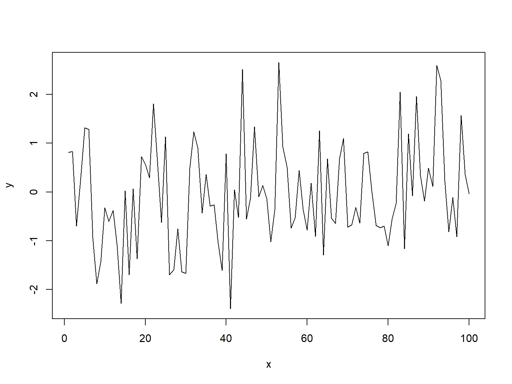
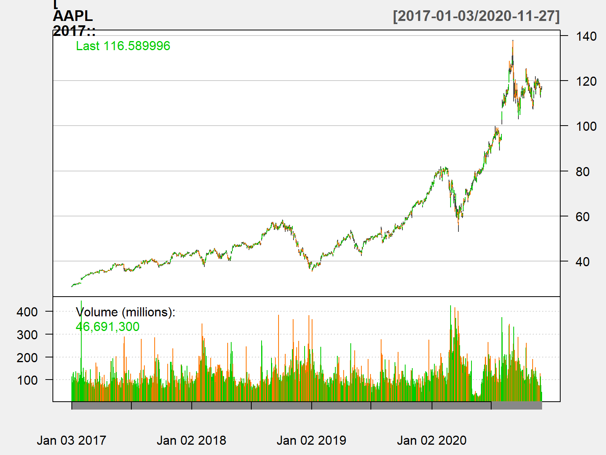
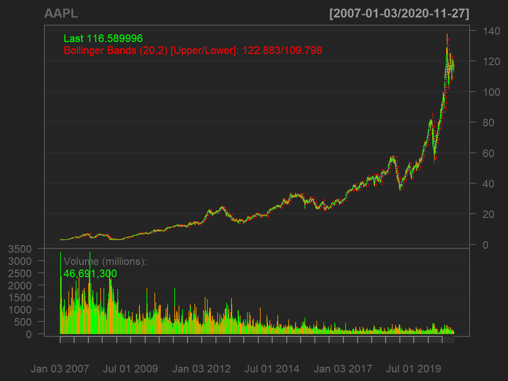
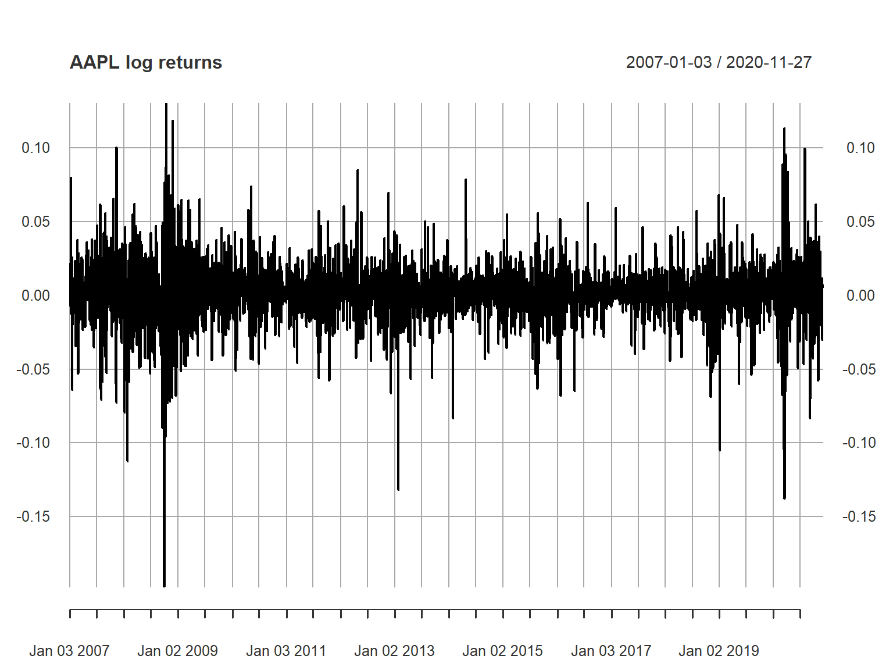
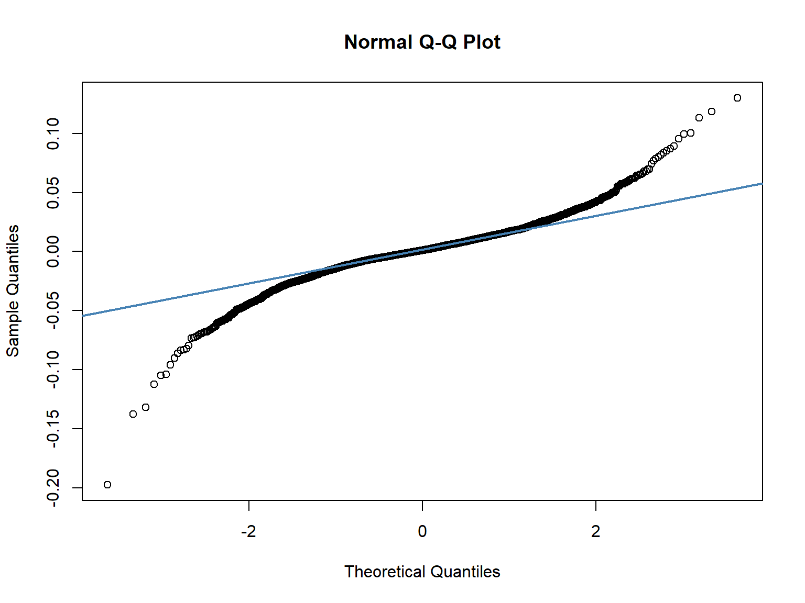

Введение в R
“Количественные финансы”
Салихов Марсель (marcel.salikhov@gmail.com)
2020-11-29
Цели лекции
- понять, что такое R (произносится как “аР” или “эР”), в чем его достоинства как инструмента количественного анализа
- получить базовые представления о типах данных в R
- понять, что такое векторизация в R
- научиться работать с датами в R
- получить навыки работы с пакетом
xts
- узнать, как можно строить графики в R
Что такое R?
- R – язык программирования и платформа для статистического анализа, построения визуализаций/графиков и много другого. К примеру, эта презентация сделана в R.
- R – наиболее широко используемое в мире средство для статистического анализа.
Почему именно R?
- R – устоявшийся, достаточно простой и эффективный язык программирования.
- Выполнение аналитической задачи в форме кода имеет большие преимущества: проще автоматизировать выполнение сложных задач, проще находить ошибки, проще вспомнить потом, что же было сделано.
- Reproducible research – принцип проведения исследований в современном мире.
- R имеет огромную экосистему дополнительного функционала (пакетов), которые расширяют базовые возможности. Практически все современный статистические методы, которые вы можете себе представить, имеют реализацию в R. И все это – бесплатно!
- R реализует один из лучших функционалов по построению графиков и визуалазиации данных.
- Большая пользовательская база и эко-система. На stackoverflow.com в настоящее время задано около 372 тыс. вопросов по R. R входит в топ-10 наиболее популярных языков программирования 2020 года по индексу TIOBE. В 2019 году было 16 место.
- R создан в первую не-программистами (а статистиками) для не-программистов. Не стоит бояться!
- Вы можете можете посмотреть исходный код любой функции из любого пакета и понять, как реализуется тот или иной метод – это не “черный ящик”.
- R одинаковым образом работает на всех современных платформах – Windows/Mac OS/Unix. R может работать и в браузере или “в облаке”.
Этот график тоже построен в R:
Ограничения R
- Кривая обучения – печатать команды в текстовом виде, а не выполнять манипуляции мышью в графическом интерфейсе с начала может показаться не очень удобным.
- Многие задачи в R могут выполняться разными способами, разными функциями – это запутывает.
- R все данные хранит в оперативной памяти. Объем данных для анализа ограничен памятью. Это ограничивает разработки очень Больших моделей.
- R не очень хорошо подходит для высокоскоростных вычислений в промышленном использовании или для решения очень больших задач, так как является медленным по сравнению с языками более низкого уровня.
R или Excel
- Каждый инструмент – для своих задач. Надо уметь работать с разными инструментами для того, чтобы решать поставленную задачу оптимальным образом.
- Excel – по сути отраслевой стандарт для выполнения простых и гибких количественных задач. Если вам необходимо “посмотреть” на данные и “потрогать” их, то Excel – лучший вариант. К примеру, если вы хотите быстро проанализировать финансовую отчетность определенной компании, то удобнее использовать Excel. Если вы хотите проанализировать отчетность 100 компаний и построить регрессию на их финансовых показателях – удобнее использовать R.
- Excel хорошо подходит для построения относительно несложных количественных моделей, так как вы наглядно видите, что происходит.
- Мы иногда будем использовать Excel для того, чтобы лучше понять суть того или иного метода.
НО:
- Excel не дает работать с данными, даже относительно небольшими по современным стандартам. Попробуйте открыть в Excel файл, который содержит 100 тыс. строк и поработать с ним!
- В Excel можно строить сложные модели (и многие это делают!), но в таких моделях сложно найти ошибки (ошибки неизбежны) и поддерживать модели их. Известные примеры – данные Reinhart & Rogoff (2010), риск-менеджмент в JPMorgan. Недавно была история c потерей зафиксированных заражений COVID-19 в Великобритании.
- Excel, по сути, не поддерживает статистические вычисления и операции, кроме самых базовых. К примеру, попробуйте найти, как посчитать медиану в сводных таблицах Excel.
- В Excel сложно и не оптимально работать с финансовыми данными.
R или Python
- Существует еще несколько альтернатив R, которые достаточно широко используются на практике.
- Python – универсальный язык программирования, который также широко используется в количественных финансах.
- Python имеет одни из наиболее развитых и производительных библиотек для машинного обучения, но “отстает” в части статистических методов и пакетов. + Производительность R и Python обычно сопоставимы между собой, однако Python имеет более удобные средства для оптимизации кода. Python, как правило, имеет более “лаконичный” синтаксис по сравнению с R.
- Python также широко используется в количественных финансах. Все методы, которые будут проходиться в рамках курса, также можно реализовать в Python.
R или Matlab/Statа/SPSS/EViews?
- Matlab – пакет прикладных программ для вычислений и язык программирования, разработанный компанией MathWorks. Преимущества – широкое распространение в отдельных отраслях науки/технологий, высокая скорость работы. Недостатки – достаточно запутанный синтаксис, коммерческий характер продукта, относительно низкая популярность по сравнению с R/Python.
- Другие известные статистические пакеты (Statа, SPSS, EViews) тоже имеют довольно высокую стоимость. Маловероятно, что вы столкнетесь с ними вне академической работы.
- Необходимо выбирать средства под решаемую задачу, сам по себе выбор конкретного инструментария не так важен.
Установка R
- Зайти на сайт CRAN и установить R.
- Зайти на сайт RStudio и обязательно установить R Studio – это более удобный и совершенный редактор (IDE) для R.
- R можно установить и на Windows/Mac OS/ Unix – разницы в функционале не будет.
- Для того, чтобы устанавливать пакеты необходимо иметь права администратора.
- Не устанавливайте R в свою рабочую папку, в особенности, если вы используете имя пользователя на кириллице (для Windows). Лучше изменить предлагаемую папку “по умолчанию” на что-то другое (к примеру,
С:\R).
Альтернатива – использование RStudio Cloud – облачного версия компании RStudio.
Бесплатный план RStudio Cloud включает:
- 15 часов работы
- до 15 проектов
- 1 Гигабайт памяти
- 1 ядро ЦПУ.
Этого вполне достаточно для нашей работы.
Изучение R
- для выполнения лабораторных работ я буду предоставлять часть кода для выполнения задачи. Часть кода вам придется писать самостоятельно.
- Лучшая способ научиться чему-либо – это практика.
- Ваша задача - 1) модифицировать код для вашего тикера/компании, которая будет назначена вам случайным образом 2) интерпретировать полученные результаты с содержательной точки зрения. 3) писать свой собственный код.
ваша модель значима или нет? как ее можно модифицировать? что показывают статистические тесты?
- Вы можете дополнительно изучать R для того, чтобы лучше освоить задачи этого курса, а также использовать эти знания в будущем.
- Помощь по любой команде – ?название команды в консоли (к примеру,
?type)
- Увидеть подсказку по аргументу функции:
название_функции() + скобки + Tab
RStudio – основы
RStudio представляет собой очень удобную среду (IDE) для работы в R, которая сильно облегчается жизнь.
- В консоли вы можете печатать команды для немедленного исполнения.
- Окно “Workspace” (правое верхнее) показывает все активные объекты/переменные (
Environment). Вкладка History показывает все команды, которые вы вводили с начала сеанса работы.
- Вкладка «Files» отображает все файлы и папки в рабочем пространстве по умолчанию. На вкладке «Plots» будут показаны все ваши графики. На вкладке
packages будет отображаться серия пакетов или надстроек, необходимых для запуска определенных процессов. Дополнительную информацию см. на вкладке help
- Войдите в RStudio Cloud, чтобы начать самостоятельную работу.
Изучите cheat sheet по работе в Rstudio
Команды в R
Базовые операции
Начнем с основ:
## [1] "Hello world!"
Сообщения, начинающиеся со знака ##, – показывают результат вывода в консоли R.
R работает и как калькулятор. Можно складывать переменные:
## [1] 4
умножать:
## [1] 6
делить:
## [1] 3
извлекать квадратный корень:
## [1] 2.236068
брать логарифм
## [1] 1.609438
возводить в степень
## [1] 1024
логические операторы
## [1] TRUE
5 >= 5 # больше или равно
## [1] TRUE
## [1] TRUE
## [1] TRUE
Оператор присваивания присваивает знание различным типам переменным. Можно использовать = или <- – они идентичны. Обычно используется <-.
В Rstudio есть удобное сочетание клавиш Alt - для того, чтобы написать эту команду.
x = 10 # присвоить переменной x значение 10
y <- x # присвоить переменной y значение переменной x
Типы данных
- Всё в R – объекты. Объекты могут быть разных типов и классов. Узнать тип объекта можно с помощью команды
type, класс объекта – командой class.
- R оперирует именованными структурами данным. Каждый объект имеет свое имя.
- Числа могут быть разных типов.
## [1] 1024
Ими могут быть, десятичные числа. Они называются numeric.
x <- 10.0 # присвоить переменной x значение 10.5
x # вывести значение x
## [1] 10
class(x) # класс переменной х
## [1] "numeric"
typeof(x) # тип переменной X
## [1] "double"
## [1] TRUE
## [1] 10
Целые числа
Тип integer
x = as.integer(3) # присвоить переменной x значение 3
y = 10L
x # вывести значение x
## [1] 3
class(x) # тип переменной х
## [1] "integer"
is.integer(x) # является ли x целым числом?
## [1] TRUE
## [1] TRUE
Логические переменные
x = 1; y = 2 # sample values
z = x > y
z
## [1] FALSE
## [1] "logical"
Логические операции
u = TRUE; v = FALSE
u & v # u AND v
## [1] FALSE
## [1] TRUE
## [1] FALSE
## [1] "logical"
Тип character
character – строковая переменная. В R объекты этого типа выделены кавычками.
x = 1 # присвоить x численное значение 1
y = '1' # присвоить y текстовое значение равное 1
as.numeric(y) # преобразовать y в тип numeric
## [1] 1
## попробуйте команду x + y , будет сообщение об ошибке
Обращайте внимание на такой, какой тип имеет переменная с которой вы работаете.
Тип NA
Специальный тип для обозначения пропущенных данных (missing value).
## [1] TRUE
## [1] FALSE TRUE
## [1] FALSE
Вектор
Вектор – тип данных, который состоит из упорядоченного набора объектов одного типа. Вектор можно создать с помощью команды c.
a <- c(1, 2, 3)
b <- c(4,5,6)
is.vector(a) ## является ли a вектором
## [1] TRUE
n = c(2, 3, 5)
s = c("aa", "bb", "cc", "dd", "ee")
c(n, s)
## [1] "2" "3" "5" "aa" "bb" "cc" "dd" "ee"
Есть и другие варианты для создания векторов:
## [1] 1 2 3 4 5 6 7 8 9 10
seq(from = 2, to = 10, by = 2)
## [1] 2 4 6 8 10
seq(from= 1, by =2, length.out = 5)
## [1] 1 3 5 7 9
## [1] 1 2 3 4 1 2 3 4
## [1] 1 1 2 2 3 3 4 4
Для векторов одинакой длины операции совершают поэлементно.
У каждого вектора есть свой индекс (порядковый номер), к которому можно обратиться с помощью имени объекта (вектора) и квадратных скобок. Индекс начинается с ‘1’ (а не с 0 как в Python!). Знак минус (-) исключает данный индекс из вектора.
s = c("a", "b", "c", "d", "e")
s[3] # третий элемент
## [1] "c"
s[10] # нет 10 элемента, поэтому NA
## [1] NA
s[1:3] # элементы с 1 по 3
## [1] "a" "b" "c"
s[c(1,3,5)] # оставить элементы 1,3 и 5
## [1] "a" "c" "e"
s[-3] # убрать третий элемент
## [1] "a" "b" "d" "e"
s[-(1:2)] # убрать элементы 1 и 2
## [1] "c" "d" "e"
Векторизация операций
- Преимущество R – так называемая векторизация операций. Это означает, что вы можете осуществлять операции над векторами, точно так же, как и над отдельными числами.
- Векторизация обеспечивает скорость, а также избавляет от необходимости писать циклы
for.
- На самом деле любой единичный объект – это вектор с длиной 1.
## [1] 1 2 3
## [1] 4 5 6
## [1] 5 7 9
## [1] 4 10 18
## [1] 0.0000000 0.6931472 1.0986123
Операции могут выполняться и с векторами разной длины. В этом случае используется “выравнивание векторов”" (recycling rule).
u = c(10, 20, 30)
v = c(1, 2, 3, 4, 5, 6, 7, 8, 9)
u + v
## [1] 11 22 33 14 25 36 17 28 39
В чем оно заключается?
с помощью функции ‘length’ можно узнать длину вектора
u = c(10, 20, 30)
length(u)
## [1] 3
Типа matrix
matrix – набор количественных данных, упорядоченных в двумерную таблицу.
Первый индекс в матрице определяет номер строки, второй – номер стобца. Если ничего не стоит, тогда берутся все значения.
B = matrix(
data = c(2, 4, 1, 3, 5, 7),
nrow = 2,
ncol = 3,
byrow = TRUE
)
B
## [,1] [,2] [,3]
## [1,] 2 4 1
## [2,] 3 5 7
B[2,3] # элементы, который находится на пересечении 2 строки и 3 столбца
## [1] 7
## [1] 3 5 7
## [1] 2 3
Что будет означать операция B[,-1]? B[-(1:2),-1]? Подумайте сначала, а потом проверьте в консоли.
над матрицами можно также совершать операции
C <- matrix(c(1,4,-2,1,2,1),3,2)
B
## [,1] [,2] [,3]
## [1,] 2 4 1
## [2,] 3 5 7
## [,1] [,2]
## [1,] 1 1
## [2,] 4 2
## [3,] -2 1
Оператор %*% используется специально для перемножения матриц.
## [,1] [,2]
## [1,] 16 11
## [2,] 9 20
Тип data frame
data frame – это набор (коллекция) векторов, объединенных в один объект. Каждый столбец data frame – вектор. Каждая строка – наблюдение. Большинство структурированных данных хранится в качестве data frame.
str(mtcars) # посмотреть структуру объекта
## 'data.frame': 32 obs. of 11 variables:
## $ mpg : num 21 21 22.8 21.4 18.7 18.1 14.3 24.4 22.8 19.2 ...
## $ cyl : num 6 6 4 6 8 6 8 4 4 6 ...
## $ disp: num 160 160 108 258 360 ...
## $ hp : num 110 110 93 110 175 105 245 62 95 123 ...
## $ drat: num 3.9 3.9 3.85 3.08 3.15 2.76 3.21 3.69 3.92 3.92 ...
## $ wt : num 2.62 2.88 2.32 3.21 3.44 ...
## $ qsec: num 16.5 17 18.6 19.4 17 ...
## $ vs : num 0 0 1 1 0 1 0 1 1 1 ...
## $ am : num 1 1 1 0 0 0 0 0 0 0 ...
## $ gear: num 4 4 4 3 3 3 3 4 4 4 ...
## $ carb: num 4 4 1 1 2 1 4 2 2 4 ...
dim(mtcars) # размерность объекта, количество наблюдений и переменных
## [1] 32 11
length(mtcars) # длина -- количество переменных
## [1] 11
head(mtcars) # первые 5 строк
## mpg cyl disp hp drat wt qsec vs am gear carb
## Mazda RX4 21.0 6 160 110 3.90 2.620 16.46 0 1 4 4
## Mazda RX4 Wag 21.0 6 160 110 3.90 2.875 17.02 0 1 4 4
## Datsun 710 22.8 4 108 93 3.85 2.320 18.61 1 1 4 1
## Hornet 4 Drive 21.4 6 258 110 3.08 3.215 19.44 1 0 3 1
## Hornet Sportabout 18.7 8 360 175 3.15 3.440 17.02 0 0 3 2
## Valiant 18.1 6 225 105 2.76 3.460 20.22 1 0 3 1
head(mtcars, n = 2) # first 2 rows of data.frame
## mpg cyl disp hp drat wt qsec vs am gear carb
## Mazda RX4 21 6 160 110 3.9 2.620 16.46 0 1 4 4
## Mazda RX4 Wag 21 6 160 110 3.9 2.875 17.02 0 1 4 4
tail(mtcars) # последние 5 строк
## mpg cyl disp hp drat wt qsec vs am gear carb
## Porsche 914-2 26.0 4 120.3 91 4.43 2.140 16.7 0 1 5 2
## Lotus Europa 30.4 4 95.1 113 3.77 1.513 16.9 1 1 5 2
## Ford Pantera L 15.8 8 351.0 264 4.22 3.170 14.5 0 1 5 4
## Ferrari Dino 19.7 6 145.0 175 3.62 2.770 15.5 0 1 5 6
## Maserati Bora 15.0 8 301.0 335 3.54 3.570 14.6 0 1 5 8
## Volvo 142E 21.4 4 121.0 109 4.11 2.780 18.6 1 1 4 2
tail(mtcars, n = 3) # last 3 rows of data.frame
## mpg cyl disp hp drat wt qsec vs am gear carb
## Ferrari Dino 19.7 6 145 175 3.62 2.77 15.5 0 1 5 6
## Maserati Bora 15.0 8 301 335 3.54 3.57 14.6 0 1 5 8
## Volvo 142E 21.4 4 121 109 4.11 2.78 18.6 1 1 4 2
Существуют разные способы обратиться к элементам data frame.
К примеру, к отдельной колонке (переменной) можно обратиться следующими способами:
mtcars[9] # номер внутри двойных скобок
## am
## Mazda RX4 1
## Mazda RX4 Wag 1
## Datsun 710 1
## Hornet 4 Drive 0
## Hornet Sportabout 0
## Valiant 0
## Duster 360 0
## Merc 240D 0
## Merc 230 0
## Merc 280 0
## Merc 280C 0
## Merc 450SE 0
## Merc 450SL 0
## Merc 450SLC 0
## Cadillac Fleetwood 0
## Lincoln Continental 0
## Chrysler Imperial 0
## Fiat 128 1
## Honda Civic 1
## Toyota Corolla 1
## Toyota Corona 0
## Dodge Challenger 0
## AMC Javelin 0
## Camaro Z28 0
## Pontiac Firebird 0
## Fiat X1-9 1
## Porsche 914-2 1
## Lotus Europa 1
## Ford Pantera L 1
## Ferrari Dino 1
## Maserati Bora 1
## Volvo 142E 1
## [1] "data.frame"
mtcars[[9]] # номер внутри двойных скобок
## [1] 1 1 1 0 0 0 0 0 0 0 0 0 0 0 0 0 0 1 1 1 0 0 0 0 0 1 1 1 1 1 1 1
## [1] "numeric"
## [1] 1 1 1 0 0 0 0 0 0 0 0 0 0 0 0 0 0 1 1 1 0 0 0 0 0 1 1 1 1 1 1 1
## [1] 1 1 1 0 0 0 0 0 0 0 0 0 0 0 0 0 0 1 1 1 0 0 0 0 0 1 1 1 1 1 1 1
К строкам можно обратиться следующими способами:
mtcars[24,] # индекс по номеру
## mpg cyl disp hp drat wt qsec vs am gear carb
## Camaro Z28 13.3 8 350 245 3.73 3.84 15.41 0 0 3 4
mtcars[c(3, 24),] #3,24 строка
## mpg cyl disp hp drat wt qsec vs am gear carb
## Datsun 710 22.8 4 108 93 3.85 2.32 18.61 1 1 4 1
## Camaro Z28 13.3 8 350 245 3.73 3.84 15.41 0 0 3 4
## [1] FALSE FALSE FALSE TRUE TRUE TRUE TRUE TRUE TRUE TRUE TRUE TRUE
## [13] TRUE TRUE TRUE TRUE TRUE FALSE FALSE FALSE TRUE TRUE TRUE TRUE
## [25] TRUE FALSE FALSE FALSE FALSE FALSE FALSE FALSE
## mpg cyl disp hp drat wt qsec vs am gear carb
## Hornet 4 Drive 21.4 6 258.0 110 3.08 3.215 19.44 1 0 3 1
## Hornet Sportabout 18.7 8 360.0 175 3.15 3.440 17.02 0 0 3 2
## Valiant 18.1 6 225.0 105 2.76 3.460 20.22 1 0 3 1
## Duster 360 14.3 8 360.0 245 3.21 3.570 15.84 0 0 3 4
## Merc 240D 24.4 4 146.7 62 3.69 3.190 20.00 1 0 4 2
## Merc 230 22.8 4 140.8 95 3.92 3.150 22.90 1 0 4 2
## Merc 280 19.2 6 167.6 123 3.92 3.440 18.30 1 0 4 4
## Merc 280C 17.8 6 167.6 123 3.92 3.440 18.90 1 0 4 4
## Merc 450SE 16.4 8 275.8 180 3.07 4.070 17.40 0 0 3 3
## Merc 450SL 17.3 8 275.8 180 3.07 3.730 17.60 0 0 3 3
## Merc 450SLC 15.2 8 275.8 180 3.07 3.780 18.00 0 0 3 3
## Cadillac Fleetwood 10.4 8 472.0 205 2.93 5.250 17.98 0 0 3 4
## Lincoln Continental 10.4 8 460.0 215 3.00 5.424 17.82 0 0 3 4
## Chrysler Imperial 14.7 8 440.0 230 3.23 5.345 17.42 0 0 3 4
## Toyota Corona 21.5 4 120.1 97 3.70 2.465 20.01 1 0 3 1
## Dodge Challenger 15.5 8 318.0 150 2.76 3.520 16.87 0 0 3 2
## AMC Javelin 15.2 8 304.0 150 3.15 3.435 17.30 0 0 3 2
## Camaro Z28 13.3 8 350.0 245 3.73 3.840 15.41 0 0 3 4
## Pontiac Firebird 19.2 8 400.0 175 3.08 3.845 17.05 0 0 3 2
Изучите cheet sheet по базовым функциям R.
Тип Date
Тип Date представляет календарные даты. Финансовые серии как правило представляют собой временный ряд, упорядоченный во времени. Поэтому эффективная работа с данными важна для финансового анализа
## [1] "Sun Nov 29 22:29:31 2020"
today <- Sys.Date()
today
## [1] "2020-11-29"
## [1] "Date"
as.numeric(today) # внутри переменная Date представляет собой количество дней с 1 января 1970 года
## [1] 18595
Даты можно представлять различным образом с помощью функции format
format(today, format = "%d %b %Y") # with month as a word
## [1] "29 mn 2020"
| %d |
день как число (0-31) |
31 |
| %a |
сокращенный день недели |
вт |
| %A |
день недели |
Вторник |
| %m |
месяц (00-12) |
00-12 |
| %b |
сокращенный месяц |
ноя |
| %B |
полный месяц |
ноября |
| %y |
2-значный год |
18 |
| %Y |
4-значный год |
2018 |
Что делать, если мы хотим даты на английском языке?
Нужно поменять параметры языка для вашей системы и потом вернуть их обратно:
Sys.getlocale() #"ru_RU.UTF-8/ru_RU.UTF-8/ru_RU.UTF-8/C/ru_RU.UTF-8/ru_RU.UTF-8" или "=Russian_Russia.1251" (в Windows)
## [1] "LC_COLLATE=Russian_Russia.1251;LC_CTYPE=Russian_Russia.1251;LC_MONETARY=Russian_Russia.1251;LC_NUMERIC=C;LC_TIME=Russian_Russia.1251"
Sys.setlocale(locale = 'C')
## [1] "C"
format(today, format = "%d %b %Y") # with month as a word
## [1] "29 Nov 2020"
Sys.setlocale(locale = "ru_RU.UTF-8")
## Warning in Sys.setlocale(locale = "ru_RU.UTF-8"): ОС сообщает,
## что запрос установки локали в "ru_RU.UTF-8" не
## может быть выполнен
## [1] ""
можно создавать вектора дат
dt = seq(today, length.out=10, by="1 week")
dt
## [1] "2020-11-29" "2020-12-06" "2020-12-13" "2020-12-20" "2020-12-27"
## [6] "2021-01-03" "2021-01-10" "2021-01-17" "2021-01-24" "2021-01-31"
## [1] "Sunday"
## [1] "November"
## [1] "2020-11-28" "2020-12-05" "2020-12-12" "2020-12-19" "2020-12-26"
## [6] "2021-01-02" "2021-01-09" "2021-01-16" "2021-01-23" "2021-01-30"
Можно делать конвертацию между типами character и Date c помощью функций as.Date и as.character.
## [1] "2020-11-29"
str = '2018-11-06' # yyyy-mm-dd - стандартный формат представления даты
as.Date(str)
## [1] "2018-11-06"
as.Date('2018 ноября 6', format = '%Y %B %d')
## [1] NA
преобразуйте в тип Date следующую строку: 16 ноя, 2018.
Даты в Excel
Вы, наверняка, сталкивалась с тем, что Excel воспринимает даты как целые числа – что-то вроде 43831. Это связано с тем, что дата в Excel – это число дней с 30 декабря 1899 года. 43831 – это 1 января 2020 года.
Вы можете преобразовать прочитанные в Excel даты в тип даты R
as.Date(43831, origin = "1899-12-30")
## [1] "2020-01-01"
Пакеты и работа с пакетами
Стандартная версия R включает несколько базовых пакетов, которые включают в себя встроенные функции и операции. Однако сила R основана на использовании дополнительных пакетов, которые расширяют базовый функционал. Мы будем использовать несколько разных дополнительных пакетов.
Для использования пакета его сначала надо установить с помощью команды install.packages – это приводит к тому, что пакет скачивается из Интернета и устанавливается на ваш компьютер. Затем надо загрузить пакет для использования в работе с помощью команды ‘library’.
#install.packages(xts) # установать пакет
library(xts) # загрузить пакет
## Loading required package: zoo
##
## Attaching package: 'zoo'
## The following objects are masked from 'package:base':
##
## as.Date, as.Date.numeric
данная команда установит пакет, если он ранее не был установлен:
if (!require("lubridate")) install.packages("lubridate")
## Loading required package: lubridate
##
## Attaching package: 'lubridate'
## The following objects are masked from 'package:base':
##
## date, intersect, setdiff, union
Пакет lubridate облегчит работу с данными в R
library(lubridate)
dt <- Sys.Date()
dt
## [1] "2020-11-29"
## [1] 11
wday(dt) # номер для недели
## [1] 1
leap_year(dt) # високосный год?
## [1] TRUE
Посмотрите cheat sheet по работе с данными в R
Загрузка данных в R
Существует несколько возможных загрузить данные в R:
- из файлов. R может прочитать большинство файлов с данными, включая csv, xlsx, dbf, dta и другие
- напрямую из Интернета.
- встроенные датасеты
В рамках наших лабораторных работ мы будем использовать преимущественно загрузгу напрямую через Интернет.
Тип xts – временной ряд
В R есть несколько специальных типов данных для работы с временными рядами. Один из них – xts (extendible time series).
data(sample_matrix)
df_xts <- as.xts(as.data.frame(sample_matrix),
important = 'very important info!')
str(df_xts)
## An 'xts' object on 2007-01-02/2007-06-30 containing:
## Data: num [1:180, 1:4] 50 50.2 50.4 50.4 50.2 ...
## - attr(*, "dimnames")=List of 2
## ..$ : NULL
## ..$ : chr [1:4] "Open" "High" "Low" "Close"
## Indexed by objects of class: [POSIXct,POSIXt] TZ:
## xts Attributes:
## List of 1
## $ important: chr "very important info!"
xts(1:10, Sys.Date()+1:10)
## [,1]
## 2020-11-30 1
## 2020-12-01 2
## 2020-12-02 3
## 2020-12-03 4
## 2020-12-04 5
## 2020-12-05 6
## 2020-12-06 7
## 2020-12-07 8
## 2020-12-08 9
## 2020-12-09 10
## [1] "2007-01-02 MSK" "2007-01-03 MSK" "2007-01-04 MSK" "2007-01-05 MSK"
## [5] "2007-01-06 MSK" "2007-01-07 MSK"
## Open High Low Close
## [1,] 50.03978 50.11778 49.95041 50.11778
## [2,] 50.23050 50.42188 50.23050 50.39767
## [3,] 50.42096 50.42096 50.26414 50.33236
## [4,] 50.37347 50.37347 50.22103 50.33459
## [5,] 50.24433 50.24433 50.11121 50.18112
## [6,] 50.13211 50.21561 49.99185 49.99185
Основное удобство работы с объектами типа xts – удобные способы получать срезы исходных данных и возможность работать с датами:
df_xts['2007-01-06'] # отдельная дата
## Open High Low Close
## 2007-01-06 50.24433 50.24433 50.11121 50.18112
df_xts['2007-03'] # отдельный месяц
## Open High Low Close
## 2007-03-01 50.81620 50.81620 50.56451 50.57075
## 2007-03-02 50.60980 50.72061 50.50808 50.61559
## 2007-03-03 50.73241 50.73241 50.40929 50.41033
## 2007-03-04 50.39273 50.40881 50.24922 50.32636
## 2007-03-05 50.26501 50.34050 50.26501 50.29567
## 2007-03-06 50.27464 50.32019 50.16380 50.16380
## 2007-03-07 50.14458 50.20278 49.91381 49.91381
## 2007-03-08 49.93149 50.00364 49.84893 49.91839
## 2007-03-09 49.92377 49.92377 49.74242 49.80712
## 2007-03-10 49.79370 49.88984 49.70385 49.88698
## 2007-03-11 49.83062 49.88295 49.76031 49.78806
## 2007-03-12 49.82763 49.90311 49.67049 49.74033
## 2007-03-13 49.69628 49.70863 49.37924 49.37924
## 2007-03-14 49.36270 49.53735 49.30746 49.53735
## 2007-03-15 49.57374 49.62310 49.39876 49.49600
## 2007-03-16 49.44900 49.65285 49.42416 49.59500
## 2007-03-17 49.55666 49.55666 49.33564 49.34714
## 2007-03-18 49.29778 49.67857 49.29778 49.65463
## 2007-03-19 49.62747 49.65407 49.51604 49.54590
## 2007-03-20 49.59529 49.62003 49.42321 49.50690
## 2007-03-21 49.49765 49.53961 49.41610 49.51807
## 2007-03-22 49.42306 49.42306 49.31184 49.39687
## 2007-03-23 49.27281 49.27281 48.93095 48.93095
## 2007-03-24 48.86635 48.86635 48.52684 48.52684
## 2007-03-25 48.50649 48.50649 48.33409 48.33973
## 2007-03-26 48.34210 48.44637 48.28969 48.28969
## 2007-03-27 48.25248 48.41572 48.23648 48.30851
## 2007-03-28 48.33090 48.53595 48.33090 48.53595
## 2007-03-29 48.59236 48.69988 48.57432 48.69988
## 2007-03-30 48.74562 49.00218 48.74562 48.93546
## 2007-03-31 48.95616 49.09728 48.95616 48.97490
head(df_xts['/2007-01-07']) # с начала до 7 января 2007
## Open High Low Close
## 2007-01-02 50.03978 50.11778 49.95041 50.11778
## 2007-01-03 50.23050 50.42188 50.23050 50.39767
## 2007-01-04 50.42096 50.42096 50.26414 50.33236
## 2007-01-05 50.37347 50.37347 50.22103 50.33459
## 2007-01-06 50.24433 50.24433 50.11121 50.18112
## 2007-01-07 50.13211 50.21561 49.99185 49.99185
head(df_xts['2007-06-25/']) # с 25 июня 2007 года до конца
## Open High Low Close
## 2007-06-25 47.20471 47.42772 47.13405 47.42772
## 2007-06-26 47.44300 47.61611 47.44300 47.61611
## 2007-06-27 47.62323 47.71673 47.60015 47.62769
## 2007-06-28 47.67604 47.70460 47.57241 47.60716
## 2007-06-29 47.63629 47.77563 47.61733 47.66471
## 2007-06-30 47.67468 47.94127 47.67468 47.76719
## Open High Low Close
## 2007-01-02 50.03978 50.11778 49.95041 50.11778
## 2007-01-03 50.23050 50.42188 50.23050 50.39767
## 2007-01-04 50.42096 50.42096 50.26414 50.33236
## 2007-01-05 50.37347 50.37347 50.22103 50.33459
## 2007-01-06 50.24433 50.24433 50.11121 50.18112
## 2007-01-07 50.13211 50.21561 49.99185 49.99185
## Open High Low Close
## 2007-03-01 50.81620 50.81620 50.56451 50.57075
## 2007-03-02 50.60980 50.72061 50.50808 50.61559
## 2007-03-03 50.73241 50.73241 50.40929 50.41033
## 2007-03-04 50.39273 50.40881 50.24922 50.32636
## 2007-03-05 50.26501 50.34050 50.26501 50.29567
## 2007-03-06 50.27464 50.32019 50.16380 50.16380
## 2007-03-07 50.14458 50.20278 49.91381 49.91381
## 2007-03-08 49.93149 50.00364 49.84893 49.91839
## 2007-03-09 49.92377 49.92377 49.74242 49.80712
## 2007-03-10 49.79370 49.88984 49.70385 49.88698
## 2007-03-11 49.83062 49.88295 49.76031 49.78806
## 2007-03-12 49.82763 49.90311 49.67049 49.74033
## 2007-03-13 49.69628 49.70863 49.37924 49.37924
## 2007-03-14 49.36270 49.53735 49.30746 49.53735
## 2007-03-15 49.57374 49.62310 49.39876 49.49600
## 2007-03-16 49.44900 49.65285 49.42416 49.59500
## 2007-03-17 49.55666 49.55666 49.33564 49.34714
## 2007-03-18 49.29778 49.67857 49.29778 49.65463
## 2007-03-19 49.62747 49.65407 49.51604 49.54590
## 2007-03-20 49.59529 49.62003 49.42321 49.50690
## 2007-03-21 49.49765 49.53961 49.41610 49.51807
## 2007-03-22 49.42306 49.42306 49.31184 49.39687
## 2007-03-23 49.27281 49.27281 48.93095 48.93095
## 2007-03-24 48.86635 48.86635 48.52684 48.52684
## 2007-03-25 48.50649 48.50649 48.33409 48.33973
## 2007-03-26 48.34210 48.44637 48.28969 48.28969
## 2007-03-27 48.25248 48.41572 48.23648 48.30851
## 2007-03-28 48.33090 48.53595 48.33090 48.53595
## 2007-03-29 48.59236 48.69988 48.57432 48.69988
## 2007-03-30 48.74562 49.00218 48.74562 48.93546
## 2007-03-31 48.95616 49.09728 48.95616 48.97490
first(df_xts, '1 week') # 1 неделя
## Open High Low Close
## 2007-01-02 50.03978 50.11778 49.95041 50.11778
## 2007-01-03 50.23050 50.42188 50.23050 50.39767
## 2007-01-04 50.42096 50.42096 50.26414 50.33236
## 2007-01-05 50.37347 50.37347 50.22103 50.33459
## 2007-01-06 50.24433 50.24433 50.11121 50.18112
## 2007-01-07 50.13211 50.21561 49.99185 49.99185
## 2007-01-08 50.03555 50.10363 49.96971 49.98806
first(last(df_xts,'1 week'),'3 days') # что это означает?
## Open High Low Close
## 2007-06-26 47.44300 47.61611 47.44300 47.61611
## 2007-06-27 47.62323 47.71673 47.60015 47.62769
## 2007-06-28 47.67604 47.70460 47.57241 47.60716
## Open High Low Close
## [1,] 50.03978 50.11778 49.95041 50.11778
## [2,] 50.23050 50.42188 50.23050 50.39767
## [3,] 50.42096 50.42096 50.26414 50.33236
## [4,] 50.37347 50.37347 50.22103 50.33459
## [5,] 50.24433 50.24433 50.11121 50.18112
## [6,] 50.13211 50.21561 49.99185 49.99185
## [1] "2007-01-02 MSK" "2007-01-03 MSK" "2007-01-04 MSK" "2007-01-05 MSK"
## [5] "2007-01-06 MSK" "2007-01-07 MSK"
## [1] ""
days <- c("2007-05-03","2007-05-23")
df_xts[days]
## Open High Low Close
## 2007-05-03 49.46328 49.69097 49.46328 49.58677
## 2007-05-23 47.93593 48.08242 47.88763 47.90068
Трансформация перидиодичности ряда
xts предоставляет возможность менять периодичность данных
## df_xts.Open df_xts.High df_xts.Low df_xts.Close
## Jan 2007 50.03978 50.77336 49.76308 50.22578
## Feb 2007 50.22448 51.32342 50.19101 50.77091
## Mar 2007 50.81620 50.81620 48.23648 48.97490
## Apr 2007 48.94407 50.33781 48.80962 49.33974
## May 2007 49.34572 49.69097 47.51796 47.73780
## Jun 2007 47.74432 47.94127 47.09144 47.76719
## df_xts.Open df_xts.High df_xts.Low df_xts.Close
## 2007-01-08 50.03978 50.42188 49.95041 49.98806
## 2007-01-15 49.99489 50.68583 49.80454 50.48912
## 2007-01-22 50.62024 50.77336 50.02142 50.21129
## 2007-01-29 50.03966 50.28268 49.76308 49.91875
## 2007-02-05 49.85477 50.69783 49.77242 50.69783
## 2007-02-12 50.71661 50.96653 50.49322 50.96653
## 2007-02-19 50.90056 51.32342 50.80317 51.17899
## 2007-02-26 51.13725 51.14940 50.65718 50.75481
## 2007-03-05 50.74333 50.81620 50.24922 50.29567
## 2007-03-12 50.27464 50.32019 49.67049 49.74033
## 2007-03-19 49.69628 49.70863 49.29778 49.54590
## 2007-03-26 49.59529 49.62003 48.28969 48.28969
## 2007-04-02 48.25248 49.09728 48.23648 49.06316
## 2007-04-09 49.06071 49.60950 48.96928 49.50234
## 2007-04-16 49.55704 49.86289 49.55704 49.83886
## 2007-04-23 49.84698 50.33781 49.69808 49.88539
## 2007-04-30 49.87340 49.90184 49.05676 49.33974
## 2007-05-07 49.34572 49.69097 49.10310 49.13572
## 2007-05-14 49.13282 49.25507 47.58212 47.65930
## 2007-05-21 47.60647 48.02903 47.51796 47.78072
## 2007-05-28 47.81830 48.17543 47.64718 47.64718
## 2007-06-04 47.65665 47.93267 47.32342 47.37642
## 2007-06-11 47.41090 47.74899 47.14660 47.14660
## 2007-06-18 47.19411 47.56336 47.18153 47.36424
## 2007-06-25 47.46055 47.81759 47.09144 47.42772
## 2007-06-30 47.44300 47.94127 47.44300 47.76719
## [1] 6
Построение графиков
- R имеет одну из лучших систем построения и визуализации данных.
- Существует несколько разных систем для построения графиков. В данном случае мы используем базовую (base) систему.
- Команда
rnorm используется для генерирования случайных чисел, распределенных нормально \(~N(0,1)\).
x = 1:100
y = rnorm(100)
plot(x = x,y =y , type = 'l')


Пример визуализации финансовых данных
## Loading required package: TTR
## Registered S3 method overwritten by 'quantmod':
## method from
## as.zoo.data.frame zoo
## Version 0.4-0 included new data defaults. See ?getSymbols.
AAPL = getSymbols("AAPL", auto.assign = FALSE)
## 'getSymbols' currently uses auto.assign=TRUE by default, but will
## use auto.assign=FALSE in 0.5-0. You will still be able to use
## 'loadSymbols' to automatically load data. getOption("getSymbols.env")
## and getOption("getSymbols.auto.assign") will still be checked for
## alternate defaults.
##
## This message is shown once per session and may be disabled by setting
## options("getSymbols.warning4.0"=FALSE). See ?getSymbols for details.
chartSeries(AAPL, theme = 'white')
chartSeries(AAPL['2017::'], theme = 'white')

chartSeries(AAPL,TA=c(addVo(),addBBands())) #add volume and Bollinger Bands from TTR

Расчет лог-доходностей в R
aapl_ret <- diff(log(Cl(AAPL))) # расчет лог-доходностей
head(aapl_ret) #
## AAPL.Close
## 2007-01-03 NA
## 2007-01-04 0.021953106
## 2007-01-05 -0.007146747
## 2007-01-08 0.004926118
## 2007-01-09 0.079799851
## 2007-01-10 0.046745773
plot(aapl_ret, type = 'l', main = 'AAPL log returns')

Статистические тесты
Статистические тесты из курса эконометрии и статистики можно проводить в R.
Проверить нулевую гипотезу о том, что среднее доходностей APPL равно нулю.
## Warning in tstat + c(-cint, cint): Recycling array of length 1 in array-vector arithmetic is deprecated.
## Use c() or as.vector() instead.
## Warning in cint * stderr: Recycling array of length 1 in vector-array arithmetic is deprecated.
## Use c() or as.vector() instead.
##
## One Sample t-test
##
## data: aapl_ret
## t = 3.0085, df = 3500, p-value = 0.002644
## alternative hypothesis: true mean is not equal to 0
## 95 percent confidence interval:
## 0.0003643511 0.0017278711
## sample estimates:
## mean of x
## 0.001046111
Судя по результатам, мы можем принять альтернативную гипотезу.
Тесты на стационарность
Обычным тестом на стационарность является тест Дикки-Фуллера (ADF). Нулевой гипотезой для теста является наличие единичного корня (unit root).
library(tseries)
adf.test(aapl_ret[-1])
## Warning in adf.test(aapl_ret[-1]): p-value smaller than printed p-value
##
## Augmented Dickey-Fuller Test
##
## data: aapl_ret[-1]
## Dickey-Fuller = -13.359, Lag order = 15, p-value = 0.01
## alternative hypothesis: stationary
Какие выводы можно сделать из теста?
Тесты на нормальность
Существует достаточное большое количество статистических тестов для того, чтобы определить как сильно рассматриваемая случайная величина отличается от нормального распределения.
График квантиль-квантиль позволяет визуально оценить “нормальность”. Отклонения от линции указывает наличие тяжелых хвостов в данных.
qqnorm(coredata(aapl_ret))
qqline(coredata(aapl_ret), col = "steelblue", lwd = 2)

Часто используемые тесты - тест Kolmogorov-Smirnov, Shapiro-Wilk, Jarque–Bera.
Нулевая гипотеза – величина имеет нормальное распределение. Если p > 0,05 – можно принять гипотезу о нормальности распределения.
Тест S-W имеет большую мощность, чем K-S. Поэтому предпочтительно использовать его.
## Loading required package: timeDate
## Loading required package: timeSeries
##
## Attaching package: 'timeSeries'
## The following object is masked from 'package:zoo':
##
## time<-
##
## Attaching package: 'fBasics'
## The following object is masked from 'package:TTR':
##
## volatility
ksnormTest(coredata(aapl_ret)[-1])
##
## Title:
## One-sample Kolmogorov-Smirnov test
##
## Test Results:
## STATISTIC:
## D: 0.4682
## P VALUE:
## Alternative Two-Sided: < 2.2e-16
## Alternative Less: < 2.2e-16
## Alternative Greater: < 2.2e-16
##
## Description:
## Sun Nov 29 22:29:40 2020 by user: Marcel
shapiroTest(coredata(aapl_ret)[-1])
##
## Title:
## Shapiro - Wilk Normality Test
##
## Test Results:
## STATISTIC:
## W: 0.9293
## P VALUE:
## < 2.2e-16
##
## Description:
## Sun Nov 29 22:29:40 2020 by user: Marcel
jarqueberaTest(coredata(aapl_ret)[-1])
##
## Title:
## Jarque - Bera Normalality Test
##
## Test Results:
## STATISTIC:
## X-squared: 7343.882
## P VALUE:
## Asymptotic p Value: < 2.2e-16
##
## Description:
## Sun Nov 29 22:29:40 2020 by user: Marcel
Мы можем отклонить гипотезу о нормальности распределения.
Помощь и дополнительные ресурсы
- Stack Overflow – ответ на любые вопросы.
- Github – место для разработки и хранения кода.
- R-bloggers – посты и статьи по R
- Google it!